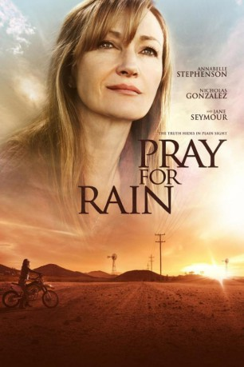

#6663 Pray for Rain
 
 IMDB-Wertung: 5.1 / 10
IMDB-Wertung: 5.1 / 10  Metascore: 0
Metascore: 0 
Die junge Journalistin Emma Gardner (Annabelle Stephenson) kehrt aus ihrem Leben in New York in das heimatliche kalifornische Farmland zurück. Dort muss sie erschreckt feststellen, dass die einstige Idylle von einer schrecklichen Dürre in Gefahr gebracht wird und Gangs die Gegend beherrschen. Inmitten von Gewalt und Gier geprägten Gesellschaftstrukturen stellt Emma Nachforschungen zum Tod ihres Vaters an. Dadurch bringt sie sich in große Gefahr.
WEBHDRIP DUBBED
Jahr: 2017
Dauer: 92 Minuten
FSK:
Land: USA Studio: Vertical EntertainmentTonspuren:
Untertitel: Deutsch,
Auflösung: 1080p (1908x796) Größe: 3164 MB
Genre: Drama
Regisseur: Alex Ranarivelo
Drehbuch: Christina Moore
Soundtrack:
Darsteller:
 Jane Seymour als Olivia Gardner
Jane Seymour als Olivia Gardner- Annabelle Stephenson als Emma Gardner
 Nicholas Gonzalez als Nico Reynoso
Nicholas Gonzalez als Nico Reynoso James Morrison als Patrick Waring
James Morrison als Patrick Waring Paul Rodriguez als Francisco Reynoso
Paul Rodriguez als Francisco Reynoso Ali Afshar als The Scorpion
Ali Afshar als The Scorpion- John Ducey als Adam Campbell
- Tyler Jacob Moore als Crash Murphy
 John Heard als Marcus Gardner
John Heard als Marcus Gardner Talon Crow als Farmer
Talon Crow als Farmer- Barnaby Falls als Lawyer
- Juliana Folk als Reporter
- Kristopher Graves als Environmentalist
- Carolyn Christine Gregory als Poor rancher's wife
- Walker Haynes als Karl Farrenbech
- John Ierardi als River Rain
- Sarah Kliban als Clerk
- George Kosturos als George
- Dirk Leatherman als Mystery Man
- Mathew Lipisko als Environmentalist
- Jaime Nungaray als Scorpion Gang
 Tom O'Reilly als Lawyer
Tom O'Reilly als Lawyer- Kel Owens als Struggling Farmer
 Lidia Porto als Lydia Sanchez
Lidia Porto als Lydia Sanchez- Ryan Milton Pratt als Farmer
- Boyan Radoslavov als FBI Agent Arresting Ron Skinner
- Isabella Sanchez als Angry Farmer's Wife
- Rick Silver als Angry Farmer
- Mikkel Simons als Environmentalist
- Peter Sommers als Well Digging Crew
- Billy Teague als Windermere's Body Guard
- Rose Wise als Environmentalist
 Michael Wiseman als Ron Skinner
Michael Wiseman als Ron Skinner- Bobby Ysip als Quick Mart Clerk
- Liam Xander Breen als Tomasito
- Jason F. Knittle II als Ricky
- Jason F. Knittle als Farmer - Ricky's Father
- John Lobato als Environmentalist
- Jim O'Reilly als Farmer
- Willy Ortlieb als Well Driller
- Jeffrey Smith als Well Driller
- Michael Villa als Scorpion gang member
- Camille Werder als Child
Datei: X:\2017(N-Z)\Pray for Rain (2017, FSK, 1908x796).mkv seit 02.08.2017
Festplatte: HD 2017(A-Z)-2018(A-F)
 Es gibt insgesamt 170 Filme in der Gruppe '2017(N-Z)'
Es gibt insgesamt 170 Filme in der Gruppe '2017(N-Z)'